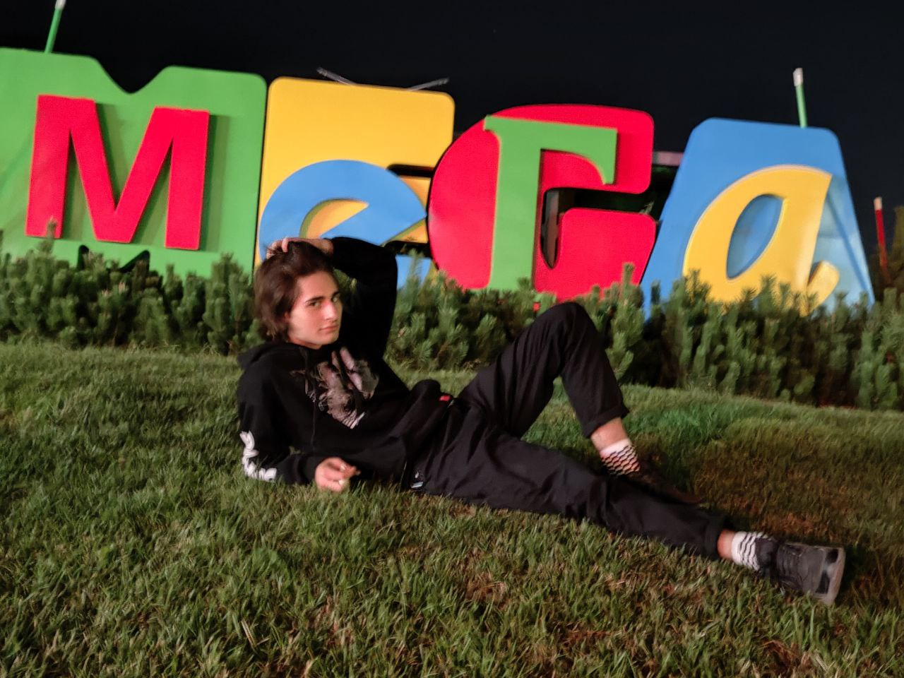

Родился 04.04.2004 в Перми. В 2019 году окончил сельскую Гамовскую школу.
После поступил на программиста и всё ещё учится, чтобы жить во благо родине
Хобби
Где же я был этим летом?
Екатеринбург - культурная столица Урала, город миллионик
Расположен на восточном склоне Среднего Урала, по берегам реки Исети.

Тут я был со своим другом Адемом. Мы повеселились